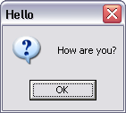

(message, title = "ALERT", hwnd = 0, flags = 0)
Creates a MessageBox, and displays the message passed in. See MSDN for more information on MessageBox.
If necessary message will be converted to a string using Display.
message and title will be translated using TranslateLanguage.
MB.TASKMODAL will be added to the flags.
If the dialog box could not be shown 0 is returned. Otherwise the return value depends on the button pressed; 1 for OK, 2 for Cancel,3 for Abort, 4 for Retry, 5 for Ignore, 6 for Yes, 7 for No, 10 for Try Again and 11 for Continue. Pressing the Close button at the right upper corner of the title bar will return 2 (as for Cancel) except when only one button OK is present (when the flag is 0) when the return value will be 1.
For example:
Alert('How are you?', 'Hello', flags: MB.ICONQUESTION)
would display
Note: Alert can be redirected by setting Suneido.Alert to a function that takes the same arguments as MessageBox.